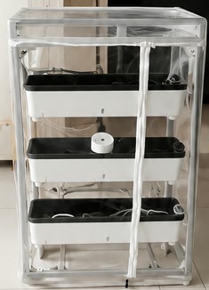
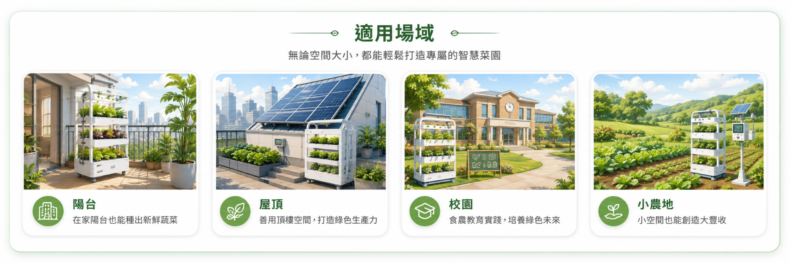
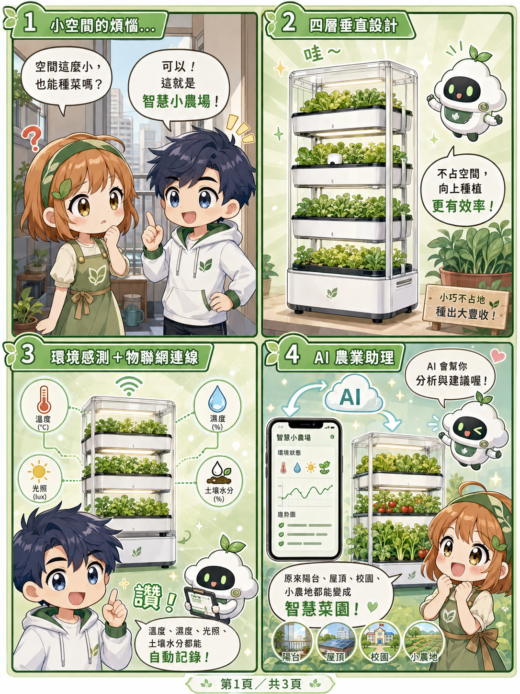
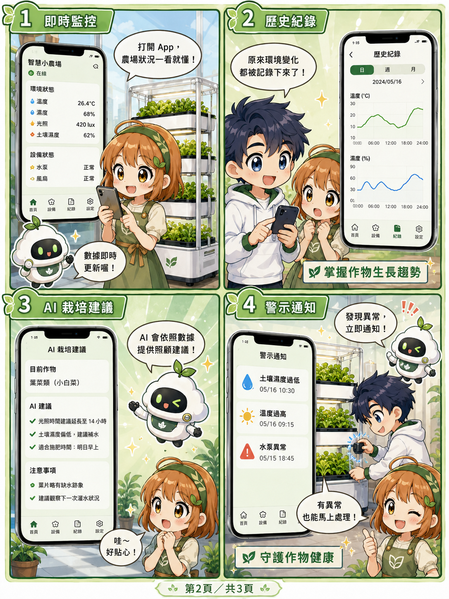
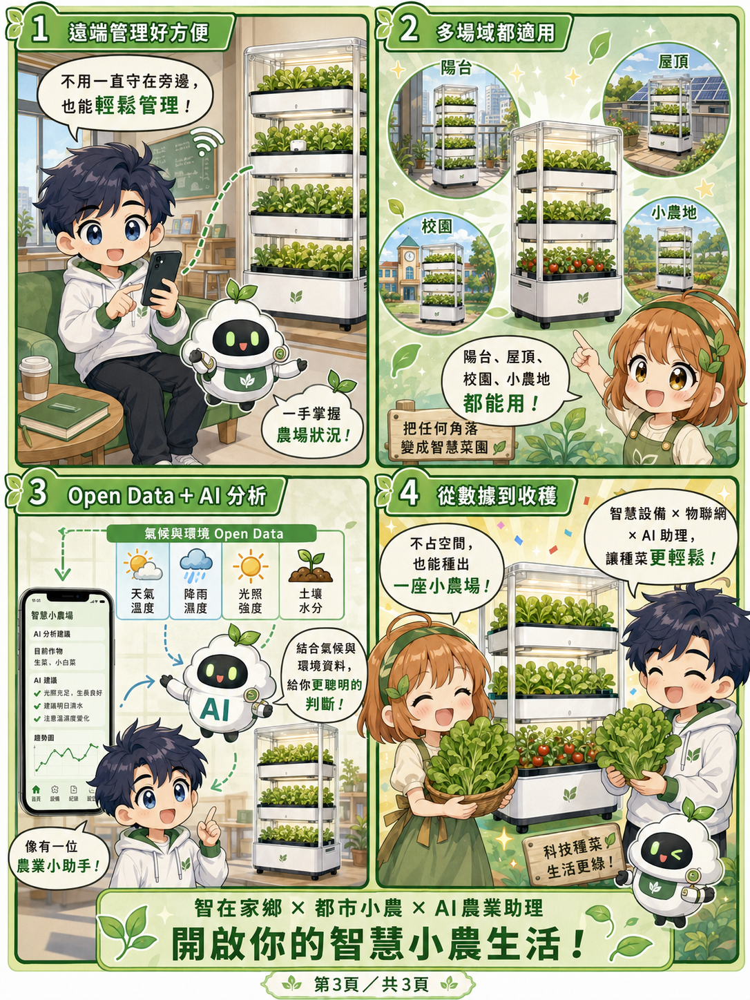

VISION
把農業科技帶進家鄉，也帶進每一個城市角落
從一座小塔開始，讓生活多一點綠，讓農業多一點智慧。
APP DEMO
智慧小農場 App 範例
模擬完整農業資訊助理平台：監控、AI建議、紀錄、警示、遠端控制。
App 功能總覽
即時監控溫度、濕度、光照、水分、pH、EC、設備狀態。
即時影像遠端觀看作物，搭配 AI 影像辨識判斷葉色與異常。
AI 栽培建議依作物、環境與天氣資料提出澆水、補光、收成建議。
Open Data 串接整合氣象預報、降雨、日照、水文與災害警示。
異常警示水位過低、溫度過高、水泵異常、病蟲害風險即時提醒。
遠端控制可控制水泵、風扇、LED 補光與排程管理。
LIVE CAMERA
即時影像監控 Demo
展示攝影機監控畫面，可用於遠端查看作物狀況，也能延伸成 AI 影像辨識。

AI 影像分析範例
葉色：正常綠色
生長密度：良好，可持續觀察
異常判斷：未發現明顯枯黃或缺水
建議：明日上午補光 2 小時，並檢查上層水槽。
等待影像分析結果。
POSTER
產品圖片與功能海報

COMIC
漫畫解說功能
用漫畫讓小農、家長、學生與社區民眾快速理解智慧農業設備。



ROADMAP
平台可擴充方向
1. 設備上線感測器、水泵、補光、攝影機整合。
2. 資料串接匯入氣象、水文、作物資料與地方環境資料。
3. AI 助理提供作物問答、風險預測、栽培排程。
4. 智在家鄉協助社區、小農、學校建立智慧蔬菜基地。